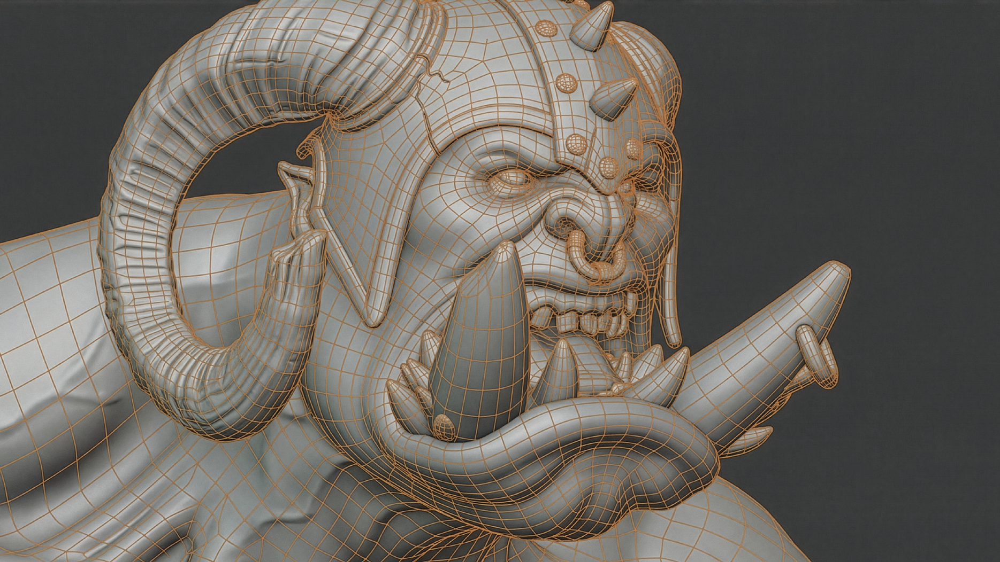
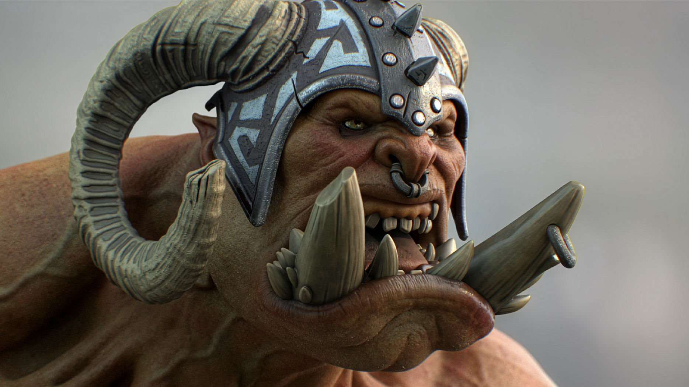
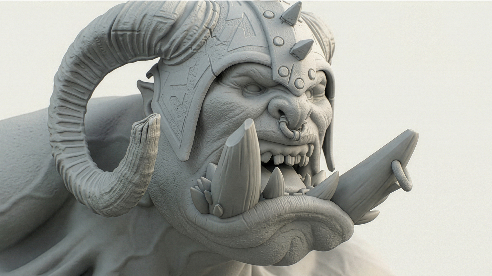
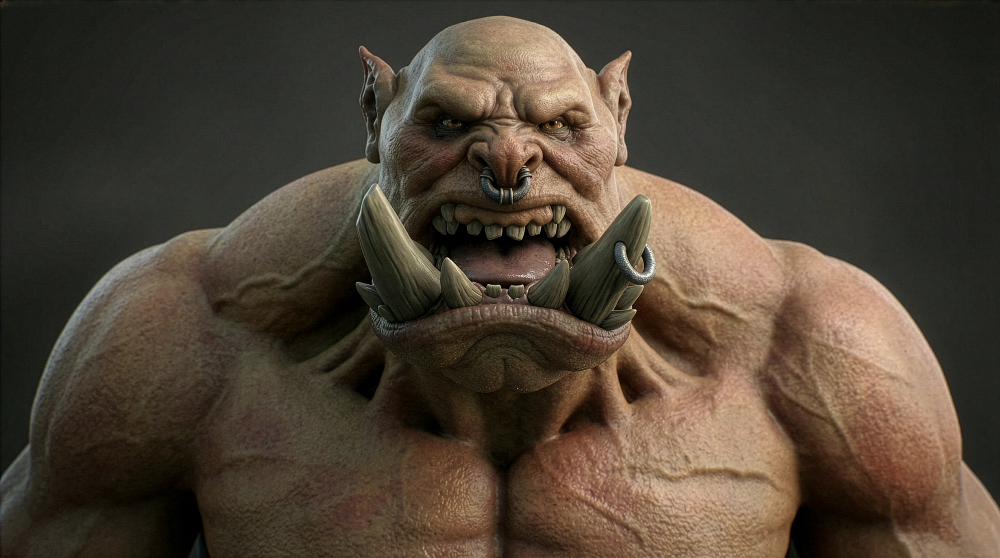
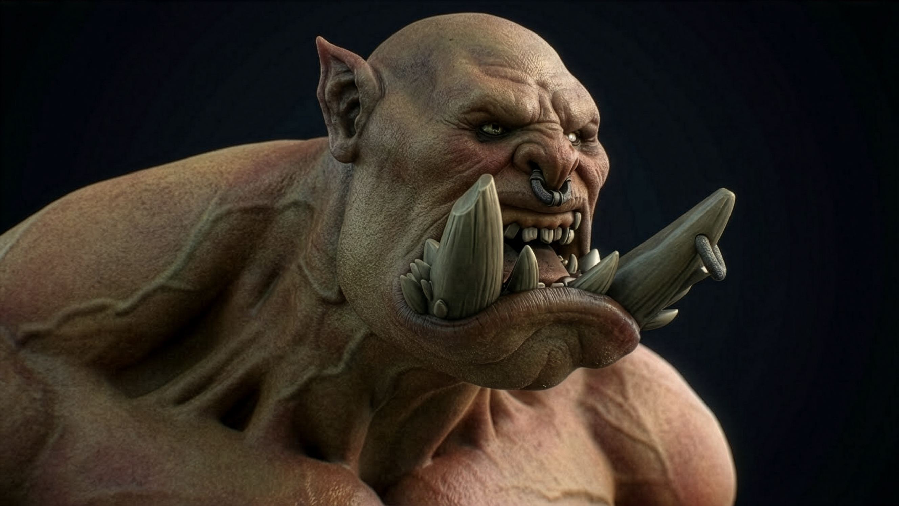

Concept Creation • Figurine Sculpting (1/6) • Retopology • UVs • PBR Texturing
AI-Assisted Animation • Cinematic Adaptation • Camera • Lighting • Rendering • Video Editing



I designed and created this 1/6 scale figurine and all its accessories using Maxon One, ZBrush, and Substance 3D. Inspired by the World of Warcraft universe, this project explores semi-realistic character design with a strong focus on morphology and detail. I enjoy working across both stylized and more realistic approaches, and this piece reflects that balance. The videos showcase my workflow, from high-resolution sculpting to texturing and final rendering to visualize the character’s appearance. The lower image presents the retopologized low-poly version, optimized for real-time rendering and game engines. The model was originally sculpted in ZBrush, then retopologized, UV-unwrapped, and baked (normal map, ambient occlusion, curvature, etc.) to preserve visual quality while reducing complexity. I also explored an AI-assisted creative workflow to animate the character directly from the final 3D renders, resulting in a short edited clip. The model is currently being prepared for 3D printing, as shown in the Products & Manufacturing section of this website.
Once retopology and PBR texturing were completed, the character was rendered in Substance Stager to achieve clean, production-ready stills with controlled lighting and materials. Below are the renders I created using Substance Stager.
Based on the original Substance Stager renders shown above, I created this short clip exploring AI-assisted animation, showcased below.
Based on the original Substance Stager renders, AI upscaling was applied to enhance image sharpness, detail, and overall visual fidelity while preserving the original look.


This cinematic animation was produced from Substance Stager renders and enhanced through AI-assisted video animation to test motion, timing, and visual impact. The clip below presents the render before post-effects were applied in After Effects.